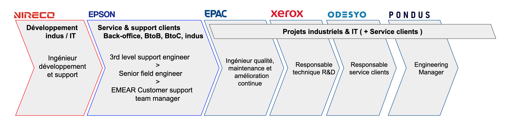

Ce site est en cours de création. J'utilise Firebase Web Hosting pour le déployer.
Vous pouvez toujours ouvrir une version PDF de mon CV, mise à jour le 17 Janvier, en attendant mieux.
Les sites que je trouve pertinents au sujet de la gestion de projets: